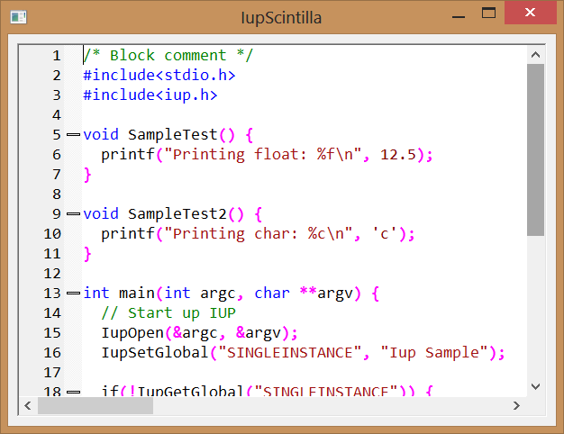

Creates a multiline source code text editor that uses the Scintilla library.
Scintilla is a free library that provides text-editing functions, with an emphasis on advanced features for source code editing. It comes with complete source code and a license that permits use in any free project or commercial product, and it is available on http://www.scintilla.org/.
IupScintilla library includes the Scintilla 3.6.6 source code, so no external references are needed.
Supported in Windows and in the systems the GTK driver is supported.
The IupScintillaOpen function must be called after a IupOpen, so that the control can be used. The "iup_scintilla.h" file must also be included in the source code. The program must be linked to the controls library (iup_scintilla), and with the "imm32.lib" library in Windows.
To make the control available in Lua use require"iuplua_scintilla" or manually call the initialization function in C, iupscintillalua_open, after calling iuplua_open. When manually calling the function the iuplua_scintilla.h file must also be included in the source code and the program must be linked to the Lua control library (iuplua_scintilla).
Ihandle* IupScintilla(void); [in C]
iup.scintilla{} -> (ih: ihandle) [in Lua]
scintilla(action) [in LED]
This function returns the identifier of the created editing component, or NULL if an error occurs.
sptr_t IupScintillaSendMessage(Ihandle* ih, unsigned int iMessage, uptr_t wParam, sptr_t lParam); [in C] Not available in Lua.
Sends a message to the Scintilla control in any platform. (since 3.11)
BORDER (creation only): Shows a border around the text. Default: "YES".
CANFOCUS (creation only) (non inheritable): enables the focus traversal of the control. In Windows the control will still get the focus when clicked. Default: YES.
CLIPBOARD (non inheritable): clear, cut, copy or paste the selection to or from the clipboard. Values: "CLEAR", "CUT", "COPY", "PASTE". Returns Yes or No, if data can be pasted from the clipboard.
CURSOR (non inheritable): defines the cursor type. Can be: "NORMAL" or "WAIT" (displays a wait cursor when the mouse is over or owned by the control).
DROPFILESTARGET [Windows and GTK Only] (non inheritable): Enable or disable the drop of files. Default: NO, but if DROPFILES_CB is defined when the element is mapped then it will be automatically enabled.
KEYSUNICODE [Windows Only] (non inheritable): allow processing of Unicode typed characters. Default: NO. (since 3.9)
OVERWRITE (non inheritable): turns the overwrite mode ON or OFF. When enabled, each typed character replaces the character to the right of the text caret. When disabled, characters are inserted at the caret.
READONLY (non inheritable): Allows the user only to read the contents, without changing it. Restricts the insertion using keyboard input and attributes. Navigation keys are still available. Possible values: "YES" and "NO". Default: NO.
SAVEDSTATE (non inheritable): sets the current state of the document to saved (given value is ignored), returns Yes or No if the document has been modified. After setting the SAVEDSTATE, when editing is done the SAVEPOINT_CB callback is called with status=0. When undo is performed back to the point were the saved state was set the callback is called again with status=1.
SIZE (non inheritable): Since the contents can be changed by the user, the Natural Size is not affected by the text contents. Use VISIBLECOLUMNS and VISIBLELINES to control the Natural Size.
USEPOPUP (non inheritable): allows to disable the default editing menu shown when the user clicks with the right button. Default: Yes.
VISIBLECOLUMNS: Defines the number of visible columns for the Natural Size, this means that will act also as minimum number of visible columns. It uses a wider character size then the one used for the SIZE attribute so strings will fit better without the need of extra columns. As for SIZE you can set to NULL after map to use it as an initial value. Default: 50.
VISIBLELINES: Defines the number of visible lines for the Natural Size, this means that will act also as minimum number of visible lines. As for SIZE you can set to NULL after map to use it as an initial value. Default: 10.
VISIBLELINESCOUNT (non inheritable, read-only): returns the number of actual visible lines.
WORDWRAP (non inheritable): If enabled will force a word wrap of lines that are greater than the with of the control, and the horizontal scrollbar will be removed. Can be "WORD", "CHAR" or "NONE". Default: NONE.
WORDWRAPVISUALFLAGS (non inheritable): enable the drawing of visual flags to indicate a line is wrapped. Can be: MARGIN (at the line number margin), START (start of wrapped line), END (end of wrapped line) or NONE. Default: NONE.
APPEND (non inheritable, write-only): Inserts a text at the end of the current text. If APPENDNEWLINE=YES, a "\n" character will be automatically inserted before the appended text if the current text is not empty (APPENDNEWLINE default is YES).
CHARid (non inheritable, read-only): returns the character at a given position, considering the "id" as the position.
CLEARALL (non inheritable, write-only): deletes all the text (unless the document is read-only).
COUNT (non inheritable, read-only): returns the number of characters in the text.
DELETERANGE (non inheritable, write-only): Deletes a range of text in the document. It uses a string format "pos,len" in order to indicate the start position and text length to delete.
INSERTid (non inheritable, write-only): Inserts a text string at position "id" or at the current position if pos is -1 or omitted. If the current position is after the insertion point then it is moved along with its surrounding text but no scrolling is performed.
LINEid (non inheritable, read-only): returns the text of the line, considering the "id" as the line number. It does not include the "\n" character. Number lines starts at 0.
LINECOUNT (non inheritable, read-only): returns the number of lines in the text.
LINEVALUE (non inheritable, read-only): returns the text of the line where the caret is. It does not include the "\n" character.
PREPEND (non inheritable, write-only): Inserts a text at the begin of the current text. If APPENDNEWLINE=YES, a "\n" character will be automatically inserted after the prepended text if the current text is not empty (APPENDNEWLINE default is YES).
VALUE (non inheritable): Text entered by the user. The "\n" character indicates a new line. After the element is mapped and if there is no text will return the empty string "". This replaces all the text in the document with the zero terminated text string you pass in.
ANNOTATIONTEXTid (non inheritable): defines and returns an annotation displayed underneath a specific line, considering the "id" as the line number. An annotation may consist of multiple lines separated by '\n'.
ANNOTATIONSTYLEid (non inheritable): sets and gets a particular style to the annotation, considering the "id" as the line number.
ANNOTATIONSTYLEOFFSET (non inheritable): sets and gets a style offset, in order to separate standard text styles from annotation styles.
ANNOTATIONVISIBLE (non inheritable): enable or disable annotations. Can be "HIDDEN" (not displayed), "STANDARD" (displayed) or "BOXED" (displayed and surrounded by a box). Default HIDDEN.
ANNOTATIONCLEARALL (non inheritable, write-only): deletes all annotations.
AUTOCSHOWid (non inheritable, write only): causes a list of words to be displayed. The words are separated by a space. "id" defines the number of characters of the word already entered by user.
AUTOCCANCEL (non inheritable, write only): cancels any displayed auto-completion list. When in auto-completion mode, the list should disappear when the user types a character that can not be part of the auto-completion.
AUTOCACTIVE (non inheritable, read only): returns YES if there is an active auto-completion list and NO if there is not.
AUTOCPOSSTART (non inheritable, read only): returns the current position when the list of words started to be shown.
AUTOCCOMPLETE (non inheritable, write only): triggers auto-completion. This has the same effect as the tab key.
AUTOCSELECT (non inheritable, write only): selects an item in the auto-completion list. It searches in the list of words for the first that matches of value (comparisons are case sensitive). If the item is not found, no item is selected.
AUTOCSELECTEDINDEX (non inheritable, read only): retrieves the current selection index, set by AUTOCSELECT attribute.
AUTOCDROPRESTOFWORD (non inheritable): when an item is selected, any word characters following the caret are first erased if this attribute is set YES. The default is NO.
AUTOCMAXHEIGHT (non inheritable): sets and gets the maximum number of rows that will be visible in an auto-completion list. If there are more rows in the list, then a vertical scrollbar is shown. The default is 5.
AUTOCMAXWIDTH (non inheritable): the maximum width of an auto-completion list expressed as the number of characters in the longest item that will be totally visible. The default is 0 (in this case, the list width is calculated to fit the item with the most characters).
BRACEHIGHLIGHT (non inheritable, write only): highlights the brace, defined by its initial and final positions (format: "pos1:pos2"). Up to two characters can be highlighted in a 'brace highlighting style', which is defined as style number (See Style Definition, id = 34).
BRACEBADLIGHT (non inheritable, write only): highlights the non matching brace, based on a position. If there is no matching brace then the brace badlighting style (See Style Definition, id = 35) can be used to show the brace that is unmatched. Set -1 as position removes the highlight.
BRACEMATCHid (non inheritable, read only): finds a corresponding matching brace given id, the position of one brace. The brace characters handled are '(', ')', '[', ']', '{', '}', '<', and '>'. If the character at position is not a brace character, or a matching brace cannot be found, the return value is -1.
CARET (non inheritable): Position of the insertion point. The first position, lin or col, is "0". It uses a string format "lin,col" in order to indicate the caret position, where lin and col must be integer numbers.
When lin is greater than the number of lines, the caret is placed at the last line. When col is greater than the number of characters in the given line, the caret is placed after the last character of the line.
If the caret is not visible the text is scrolled to make it visible.
CARETPOS (non inheritable): Position of the insertion point using a zero based character unique index "pos". Useful for indexing the VALUE string. This removes any selection, sets the caret at pos and scrolls the view to make the caret visible, if necessary.
CARETTOVIEW (non inheritable, write only): Moves the caret to the nearest visible line. Any selection is lost.
CARETCOLOR (non inheritable): color of the caret. Values in RGB format ("r g b"). (since 3.17)
CARETSTYLE (non inheritable): style of the caret. Can be LINE, BLOCK or INVISIBLE. Default: LINE. (since 3.17)
CARETWIDTH (non inheritable): with of the caret line. Can be 0, 1, 2 or 3 pixels. Default: 1. Works only when CARETSTYLE=LINE. A size of 0 will make the caret invisible also. (since 3.17)
CARETLINEVISIBLE (non inheritable): Enable or disable caret line background color. Can be Yes or No. Default: No. (since 3.21)
CARETLINEBACKCOLOR (non inheritable): Color of caret line background. Values in RGB format ("r g b"). (since 3.21)
CARETLINEBACKALPHA (non inheritable): Set translucency used for line containing the caret. Translucency ranges from 0 for completely transparent to 255 for opaque with 256 being opaque and not using translucent drawing code which may be slower. (since 3.21)
FIRSTVISIBLELINE (non inheritable): the line number of the first visible line. (since 3.18)
SELECTEDTEXT (non inheritable): Selection text. Returns NULL if there is no selection. When changed replaces the current selection. Similar to INSERT, but does nothing if there is no selection.
SELECTION (non inheritable): Selection interval. Returns NULL if there is no selection. The first position, lin or col, is "0". The accepted format is represented by the string "lin1,col1:lin2,col2", where lin1, col1, lin2 and col2 are integer numbers corresponding to the selection's interval. col2 correspond to the character after the last selected character. The values ALL and NONE are also accepted.
SELECTIONPOS (non inheritable): Same as SELECTION but using a zero based character index "pos1:pos2". Useful for indexing the VALUE string. The values ALL and NONE are also accepted.
FOLDFLAGS (non inheritable, write-only): determines how folding lines are drawn. Can be: "LEVELNUMBERS", "LINEBEFORE_EXPANDED", "LINEBEFORE_CONTRACTED", "LINEAFTER_EXPANDED" or "LINEAFTER_CONTRACTED " (default).
FOLDLEVELid (non inheritable): sets and gets the fold level of a "id" line. Can be: "WHITEFLAG", "HEADERFLAG", "NUMBERMASK" or "BASE" (default). If you use a Lexer, it is not recommend to set the fold level (this is far better handled by the Lexer). By contrast, get fold level is useful to decide how to handle user folding requests.
FOLDTOGGLE (non inheritable, write-only): Determines if the fold point (line number) may be either expanded, displaying all its child lines, or contracted, hiding all the child lines.
KEYWORDid (non inheritable, write-only): keyword list used by the current Lexer. Until 9 lists of keywords can set up using id from 0 to 8. The value is a list of keywords separated by spaces, tabs, "\n" or "\r" or any combination of these.
KEYWORDSETS (non inheritable, read only): returns a description of all of the keyword sets separated by "\n".
LEXERLANGUAGE (non inheritable): associate the Lexer language name. It is case sensitive. Default: not defined. Set to NULL to clear the association. Can be: any name supported by Scintilla. For instance: asm, bash, freebasic, cmake, COBOL, cpp (C++), css, d, diff, eiffel, fortran, hypertext (HTML), xml, lisp, lua (Lua), makefile, matlab, mysql, nsis, pascal, perl, python, ruby, smalltalk, sql, tcl, tex, vb (Visual Basic), and many others.
LOADLEXERLIBRARY (non inheritable, write-only): Load a Lexer implemented in a dynamic library given the library file name. This is a .so file on GTK+/Linux or a .DLL file on Windows. (since 3.11)
PROPERTY (non inheritable): sets and gets Lexer properties using "name=value" string pairs, where name is case sensitive and value is the associated string. There is no limit to the number of keyword pairs you can set, other than available memory. To retrieve a property first set the PROPERTYNAME attribute, the PROPERTY attribute will return its value.
PROPERTYNAMES (non inheritable, read only): returns a list of property names separated by "\n". If the Lexer does not support this information then an empty string is returned.
MARGINMASKFOLDERSid (non inheritable): defines if a margin is folding or non-folding. Can be: Yes or No.
MARGINSENSITIVEid (non inheritable): determines if a margin is sensitive or not. Margins that are not sensitive act as selection margins which make it easy to select ranges of lines. By default, all margins are insensitive. Can be: YES or NO.
MARGINTYPEid (non inheritable): set and get the type of a margin. The margin argument should be 0, 1, 2, 3 or 4. Each margin can be set to display only symbols, line numbers, or text. You can use the predefined values "SYMBOL", "NUMBER", "TEXT", "RTEXT" (right justify text), "BACKGROUND" or "FOREGROUND" (the latter two used for symbol margins that set their background or foreground using the style default colors).
MARGINWIDTHid (non inheritable): width of a margin in pixels (Default value: 0). A margin with width=0 is invisible. The margins are numbered 0 to 4. By default, Scintilla margin 0 is set to display line numbers, margin 1 is set to display non-folding symbols, and margin 2 is set to display folding symbols. Margins 3 and 4 are free for user default. However, you can set the margins to be whatever you wish using MARGINTYPEid.
MARGINLEFT (non inheritable): size of the blank margin on the left side. Default: 1.
MARGINRIGHT (non inheritable): size of the blank margin on the right side. Default: 1.
MARGINTEXTid (non inheritable): controls the text of each line of a text margin. id is the line number.
MARGINTEXTSTYLEid (non inheritable): controls the style of the text of each line of a text margin. id is the line number.
MARGINTEXTCLEARALL (non inheritable, write-only): clear all text and styles of a text margin.
MARGINCURSORid (non inheritable): set and get the arrow cursor normally shown over margins. Can be: "REVERSEARROW" (default) or "ARROW".
MARKERDEFINE (non inheritable, write-only): Defines a marker using its number and its symbol. Format: "number=symbol".
Marker numbers: can be a number in the range 0
to 31, or the pre-defined names: "FOLDEREND", "FOLDEROPENMID", "FOLDERMIDTAIL", "FOLDERSUB",
"FOLDER" and "FOLDEROPEN".
Marker symbols:
(see MARKERSYMBOL).
MARKERSYMBOLid (non inheritable): Defines a marker symbol given its number. id can be from 0 to 31.
Marker symbols: "CIRCLE", "ROUNDRECT", "ARROW", "SMALLRECT", "SHORTARROW", "EMPTY", "ARROWDOWN", "MINUS", "PLUS", "VLINE", "LCORNER", "TCORNER", "BOXPLUS", "BOXPLUSCONNECTED", "BOXMINUS", "BOXMINUSCONNECTED", "LCORNERCURVE", "TCORNERCURVE", "CIRCLEPLUS", "CIRCLEPLUSCONNECTED", "CIRCLEMINUS", "CIRCLEMINUSCONNECTED", "BACKGROUND" (line background color), "DOTDOTDOT", "ARROWS", "FULLRECT" (margin background color), "LEFTRECT", "UNDERLINE" (underline across the line), "RGBAIMAGE" and "CHARACTER+c" (where c is an ASCii character code).
MARKERFGCOLORid (non inheritable, write only): defines the foreground color of a marker number (id). Values in RGB format ("r g b").
MARKERBGCOLORid (non inheritable, write only): defines the background color of a marker number (id). Values in RGB format ("r g b").
MARKERBGCOLORSELid (non inheritable, write only): defines the highlight background colour of a marker number (id) when its folding block is selected. Values in RGB format ("r g b").
MARKERALPHAid (non inheritable, write only): defines the alpha value of a marker number (id). Markers may be drawn translucently when there are no margins.
MARKERRGBAIMAGEid (non inheritable, write only): defines the image name to be used on a marker number. Use IupSetHandle or IupSetAttributeHandle to associate an image to a name. See also IupImage. It must be an image created with the IupImageRGBA constructor, it can not be a image loaded from stock or resources.
MARKERRGBAIMAGESCALE (non inheritable, write only): defines the image scale factor, in percent (1-100).
MARKERHIGHLIGHT (non inheritable): enable or disable the the highlight folding block when it is selected. (i.e. block that contains the caret). Can be Yes or No. Default: No.
MARKERADDid (non inheritable, write-only): adds marker number to a line (id). Internally, sets the marker handle number (LASTMARKERADDHANDLE attribute) that identifies the added marker (or -1 for invalid line and out of memory), which may be useful to find where a marker is after moving or combining lines removes markers of the given number from all lines. If marker number is -1, it deletes all markers from all lines.
MARKERDELETEid (non inheritable, write-only): deletes marker number given a line number (id). If marker number is -1, all markers are deleted from the line.
MARKERDELETEALL (non inheritable, write-only): removes markers of the given number from all lines. If marker number is -1, it deletes all markers from all lines.
MARKERGETid (non inheritable, read-only): returns a 32-bit integer that indicates which markers were present on the line (id). Bit 0 is set if marker 0 is present, bit 1 for marker 1 and so on.
MARKERNEXTid (non inheritable, write-only): searches a given marker number, starting at line number (id) and continuing forwards to the end of the file. Internally, sets the the line number of the first line that contains the marker (LASTMARKERFOUND attribute) or -1, if no marker is found.
MARKERPREVIOUSid (non inheritable, write-only): searches a given marker number, starting at line number (id) and continuing backwards to the start of the file. Internally, sets the the line number of the first line that contains the marker (LASTMARKERFOUND attribute) or -1, if no marker is found.
MARKERLINEFROMHANDLEid (non inheritable, read-only): searches the document for the marker given its handle returned in MARKERADDid (use the LASTMARKERADDHANDLE as attribute value) and returns the line number of the first line that contains the marker or -1, if no marker is found.
MARKERDELETEHANDLE (non inheritable, write-only): searches the document for the marker with this handle (use the LASTMARKERADDHANDLE as attribute value) and deletes the marker if it is found.
LASTMARKERADDHANDLE (non inheritable, read-only): returns the last marker handle set by the MARKERADDid attribute.
LASTMARKERFOUND (non inheritable, read-only): returns the last line number that contains a marker found by the MARKERNEXTid, MARKERPREVIOUSid or MARKERLINEFROMHANDLE attributes.
SCROLLBAR (creation only): Associates an automatic horizontal and/or vertical scrollbar. Can be: "VERTICAL", "HORIZONTAL", "YES" (both) or "NO" (none). Default: "YES". For all systems, when SCROLLBAR is NO, the natural size will always include its size even if the native system hides the scrollbar.
SCROLLBY (non inheritable, write only): Scroll the text by the given offsets in the format "lin,col". Positive lin values increase the line number at the top of the screen (i.e. they move the text upwards). Positive col values increase the column at the left edge of the view (i.e. they move the text leftwards). (since 3.17)
SCROLLTOCARET (non inheritable, write only): Scroll the text to make the caret position visible.
SCROLLWIDTH (non inheritable): controls the document width in pixels. Default: 2000.
SEARCHINTARGET (non inheritable, write only): This searches for the first occurrence of a text string in the target defined by TARGETSTART and TARGETEND. If the search succeeds, the target is set to the found text.
SEARCHFLAGS (non inheritable): sets and gets the search flags used in SEARCHINTARGET attribute. Possible values: MATCHCASE, WHOLEWORD, WORDSTART, REGEXP and POSIX. The flag options are combined using "|" as separators. Use NULL to reset all flags.
TARGETSTART (non inheritable): sets and gets the start of target. When searching in non-regular expression mode, you can set TARGETSTART greater than TARGETEND to find the last matching text in the target rather than the first matching text. If set 0, target start will be 1 (first position of text).
TARGETEND (non inheritable): sets and gets the end of target. If set 0, target end will be the last position of text.
TARGETFROMSELECTION (non inheritable, write only): set the target start and end from current position of the selection.
REPLACETARGET (non inheritable, write only): replaces the target text. After replacement, the target range refers to the replacement text.
BGCOLOR: Background color of the text. Default: the global attribute TXTBGCOLOR. If changed it will affect the default style.
FGCOLOR: Text color. Default: the global attribute TXTFGCOLOR. If changed it will affect the default style.
FONT: the text font. Default: the global attribute DEFAULTFONT. If changed it will affect the default style.
STYLEBGCOLORid (non inheritable): background color for a style (See Style Definition). Values in RGB format ("r g b").
STYLEBOLDid (non inheritable): the boldness of a font (See Style Definition).
STYLECASEid (non inheritable): determines how text is displayed (See Style Definition). Values: LOWERCASE, UPPERCASE or MIXED (default).
STYLECHARSETid (non inheritable): sets and gets a style to use a different character set than the default (See Style Definition). Can be ANSI (default), EASTEUROPE, RUSSIAN, GB2312, HANGUL or SHIFTJIS.
STYLECLEARALL (non inheritable): sets all styles to have the same attributes as default global style (id = 32) (See Style Definition).
STYLEEOLFILLEDid (non inheritable): If the last character in the line has a style with this attribute set, the remainder of the line up to the right edge of the window is filled with the background color set for the last character (See Style Definition). Can be YES (italic) or NO.
STYLEFGCOLORid (non inheritable): foreground color for a style (See Style Definition). Values in RGB format ("r g b").
STYLEFONTid (non inheritable): sets and gets the font name (See Style Definition). Scintilla caches fonts by their names, but the cache is case sensitive.
STYLEFONTSIZEid (non inheritable): sets and gets the font size (See Style Definition), using a integer number of points.
STYLEFONTSIZEFRACid (non inheritable): sets and gets the font size (See Style Definition), using a fractional point size in hundredths of a point. For example, a text size of 9.4 points is set with value = 940.
STYLEHOTSPOTid (non inheritable): used to mark ranges of text that can detect mouse clicks (See Style Definition). The cursor changes to a hand over hotspots, and the foreground, and background colors may change and an underline appear to indicate that these areas are sensitive to clicking. This may be used to allow hyperlinks to other documents.
STYLEITALICid (non inheritable): the italic style of a font (See Style Definition). Can be YES (italic) or NO.
STYLERESET (non inheritable, write-only): Resets to the initial Scintilla style default (See Style Definition).
STYLEUNDERLINEid (non inheritable): determines if the underline is drawn, using a foreground color (See Style Definition). Can be YES (underline) or NO.
STYLEVISIBLEid (non inheritable): determines if the text is visible (YES) or hidden (NO) (See Style Definition).
STYLEWEIGHTid (non inheritable): the weight of a font (See Style Definition). Predefined values: NORMAL, SEMIBOLD and BOLD. The weight can also be a number between 1 and 999 with 1 being very light and 999 very heavy.
CLEARDOCUMENTSTYLE (non inheritable, write-only): clear all styling information and reset the folding state.
STARTSTYLING (non inheritable, write only): prepares for styling by setting the styling position.
STYLINGid (non inheritable, write only): sets the style of given length characters starting at the styling position and then increases the styling position by length. id is the style.
TABSIZE (non inheritable): Controls the number of characters for a tab stop. Default: 8.
INDENTATIONGUIDES (non inheritable): dotted vertical lines that appear within indentation white space every indent size columns. Can be: NONE, REAL, LOOKFORWARD, LOOKBOTH. Default: NONE.
HIGHLIGHTGUIDE (non inheritable): Highlights the indentation guide of a given column. When brace highlighting occurs, the indentation guide corresponding to the braces may be highlighted with the brace highlighting style (See Style Definition, id = 34). Set column to 0 to cancel this highlight.
USETABS (non inheritable): Use tabs also for indentation or only spaces. Can be Yes or No. Default: Yes.
REDO (non inheritable): redo the last operation if set to Yes, clears the undo information otherwise. Returns Yes or No if redo can be performed.
UNDO (non inheritable): undo the last operation if set to Yes, clears the undo information otherwise. Returns Yes or No if undo can be performed.
UNDOCOLLECT (non inheritable): enable or disable the undo collect of information. Can be Yes or No. Default: Yes.
UNDOACTION (non inheritable, write only): allows to create a block of undo operations. Can be BEGIN (start a bock) or END (end a block). (since 3.21)
EXTRAASCENT (non inheritable): sets and gets the space to be added to the maximum ascent, in order to allow for more space between lines. Default: 0.
EXTRADESCENT (non inheritable): sets and gets the space to be added to the maximum descent, in order to allow for more space between lines. Default: 0.
WHITESPACEVIEW (non inheritable): sets and gets the white space display mode. The white spaces can be: "INVISIBLE" (shown as an empty background color), "VISIBLEALWAYS" (drawn as dots and arrows) or "VISIBLEAFTERINDENT" (white space used for indentation is displayed normally but after the first visible character, it is shown as dots and arrows). Default: INVISIBLE.
WHITESPACESIZE (non inheritable): sets and gets the size of the dots used for mark space characters. Default: 1.
WHITESPACEFGCOLOR (non inheritable, write only): defines the foreground color of visible white space. Values in RGB format ("r g b"). By default the color will be defined by the Lexer, but defining this attribute will overriding the Lexer definition. Set to NULL to reset the definition and use the Lexer again.
WHITESPACEBGCOLOR (non inheritable, write only): defines the background color of visible white space. Values in RGB format ("r g b"). By default the color will be defined by the Lexer, but defining this attribute will overriding the Lexer definition. Set to NULL to reset the definition and use the Lexer again.
ZOOMIN (non inheritable, write only): increases the zoom factor by one point if the current zoom factor is less than 20 points.
ZOOMOUT (non inheritable, write only): decreases the zoom factor by one point if the current zoom factor is greater than -10 points.
ZOOM (non inheritable): sets and gets the zoom factor directly. Limits: -10 points to zoom out and 20 points to zoom in.
ACTIVE, EXPAND, SCREENPOSITION, POSITION, MINSIZE, MAXSIZE, WID, TIP, RASTERSIZE, ZORDER, VISIBLE: also accepted.
Drag & Drop attributes are supported. See Notes bellow.
ACTION: Action generated when the text is edited, but before its value is actually changed. Can be generated when using the keyboard, undo/redo system or from the clipboard.
int function(Ihandle *ih, int insert, int pos, int length, char* text ); [in C]
ih:action(insert, pos, length: number, text: string) -> (ret: number) [in Lua]
ih:
identifier of the element that activated the
event.
insert: =1 when text is inserted, =0 when text is deleted.
pos: 0 based character position when change started.
length: size of the change.
text:
the inserted text value. It is NULL when insert=0.
AUTOCSELECTION_CB: Action generated when the user has selected an item in an auto-completion list. It is sent before the selection is inserted. Automatic insertion can be cancelled by setting the AUTOCCANCEL attribute before returning from the callback. (since 3.10.1)
int function(Ihandle *ih, int pos, char* text ); [in C]
ih:autocselection_cb(pos: number, text: string) -> (ret: number) [in Lua]
ih:
identifier of the element that activated the
event.
pos: 0 based character start position of the word being
completed.
text: the text of the selection.
AUTOCCANCELLED_CB: Called after the user has cancelled an auto-completion list. (since 3.10.1)
int function(Ihandle *ih); [in C]
ih:autoccancelled_cb() -> (ret: number) [in Lua]
ih: identifier of the element that activated the event.
AUTOCCHARDELETED_CB: Called after the user deleted a character while auto-completion list was active. (since 3.10.1)
int function(Ihandle *ih); [in C]
ih:autocchardeleted_cb() -> (ret: number) [in Lua]
ih: identifier of the element that activated the event.
BUTTON_CB: Action generated when any mouse button is pressed or released. Use IupConvertXYToPos to convert (x,y) coordinates in character positioning.
CARET_CB: Action generated when the caret/cursor position is changed.
int function(Ihandle *ih, int lin, int col, int pos); [in C]
ih:caret_cb(lin, col, pos: number) -> (ret: number) [in Lua]
ih:
identifier of the element that activated the
event.
lin, col: line and column number (start at 0).
pos: 0 based character position.
DROPFILES_CB: Action generated when one or more files are dropped in the element.
HOTSPOTCLICK_CB: Action generated when the user clicks or double clicks on text that is in a style with the hotspot attribute set.
int function(Ihandle *ih, int pos, int lin, int col, char* status); [in C]
ih:hotspotclick_cb(pos, lin, col: number, status: string) -> (ret: number) [in Lua]
ih:
identifier of the element that activated the
event.
pos: the character position in the document that
corresponds to the hotspot click.
lin: line in the document that corresponds to the hotspot
click.
col: column in the document that corresponds to the
hotspot click.
status: status of mouse buttons and certain keyboard keys at
the moment the event was generated. The same macros used for
BUTTON_CB can be used for this status.
MARGINCLICK_CB: Action generated when the mouse button is clicked inside a margin that is marked as sensitive.
int function(Ihandle *ih, int margin, int lin, char* status); [in C]
ih:marginclick_cb(margin, lin: number, status: string) -> (ret: number) [in Lua]
ih:
identifier of the element that activated the
event.
margin: the margin number that was clicked.
lin: line in the document that corresponds to the margin
click.
status: status of mouse buttons and certain keyboard keys at
the moment the event was generated. The same macros used for
BUTTON_CB can be used for this status.
MOTION_CB: Action generated when the mouse is moved. Use IupConvertXYToPos to convert (x,y) coordinates in character positioning.
SAVEPOINT_CB: Notifies the application that a save point was reached (1) or left (0). Can be used to controls whether to display a saved or modified document. To set the save point use the SAVEDSTATE attribute.
int function(Ihandle *ih, int status); [in C]
ih:savepoint_cb(status: number) -> (ret: number) [in Lua]
ih:
identifier of the element that activated the
event.
status: can be 1 (reached) or 0 (left).
VALUECHANGED_CB: Called after the value was interactively changed by the user.
int function(Ihandle *ih); [in C]
ih:valuechanged_cb() -> (ret: number) [in Lua]
ih: identifier of the element that activated the event.
ZOOM_CB: Notifies the application when the user zooms the display using the keyboard or the ZOOM attribute. Can be used to recalculate positions, such as the width of the line number margin to maintain sizes in terms of characters rather than pixels.
int function(Ihandle *ih, int zoomInPoints); [in C]
ih:zoom_cb(zoomInPoints: number) -> (ret: number) [in Lua]
ih:
identifier of the element that activated the
event.
zoomInPoints: the current zoom factor.
MAP_CB, UNMAP_CB, DESTROY_CB, GETFOCUS_CB, KILLFOCUS_CB, ENTERWINDOW_CB, LEAVEWINDOW_CB, K_ANY, HELP_CB: All common callbacks are supported.
Drag & Drop callbacks are supported. See Notes bellow.
IupText auxiliary functions IupTextConvertLinColToPos and IupTextConvertPosToLinCol can also be used. But here lin and col starts at 0, pos starts at 0.
Scintilla can automatically format the text using the Lexer or the application can manually format the text. In both cases only 256 different styles are available. Styles are numbered from 0 to 255, invalid IDs are simply ignored. When the id is not specified for an attributes the style 0 is assumed.
Each Lexer will use the available styles with its own rules, but several Lexers share many ids. Notice that language keywords and styles definitions are not pre-defined internally, the application must define them.
| ID | Global styles |
|---|---|
| 32 | This style defines the attributes that all styles receive when the STYLECLEARALL attribute is used. |
| 33 | This style sets the attributes of the text used to display line numbers in a line number margin. |
| 34 | This style sets the attributes used when highlighting braces with the BRACEHIGHLIGHT and HIGHLIGHTGUIDE attributes. |
| 35 | This style sets the attributes used when marking an unmatched brace with the BRACEBADLIGHT attribute. |
| 36 | This style sets the font used when drawing control characters. |
| 37 | This style sets the foreground and background colors used when drawing the indentation guides. Used when INDENTATIONGUIDES!=NONE. |
Here are some known styles for C++ and Lua:
| ID | C++ styles | Lua styles |
|---|---|---|
| 0 | Default style | Default style |
| 1 | C comment | Lua comment |
| 2 | C++ comment line | Lua comment line |
| 3 | JavaDoc/ Doxygen style C comment | JavaDoc/ Doxygen style Lua comment |
| 4 | Number | Number |
| 5 | Keyword | Keyword |
| 6 | String | String |
| 7 | Character | Character |
| 8 | IDL UUID | Literal string |
| 9 | Preprocessor block | Preprocessor block |
| 10 | Operator | Operator |
| 11 | Identifier | Identifier |
| 12 | End of a line where a string is not closed | End of a line where a string is not closed |
| 13 | C# verbatim string | Keyword set number 2 |
| 14 | Regular expression | Keyword set number 3 |
| 15 | JavaDoc/Doxygen style C++ comment line | Keyword set number 4 |
| 16 | Keyword set number 2 | Keyword set number 5 |
| 17 | JavaDoc/Doxygen keyword | Keyword set number 6 |
| 18 | JavaDoc/Doxygen keyword error | Keyword set number 7 |
| 19 | Global class or typedef defined in keyword | Keyword set number 8 |
| 20 | C++ raw string | Label |
| 21 | F# triple-quoted verbatim strings | |
| 22 | Hash-quoted strings | |
| 23 | Preprocessor block comment |
Enter key will add a new line, and the Tab key will insert a Tab.
Internal Drag&Drop support is enabled by default.
IupScintilla uses attributes and callbacks very similar to the IupText control, except for text formatting.
Although the IupScintilla documentation should be sufficient for most uses, some advanced features will be better understood if the Scintilla Documentation is consulted. Also some Scintilla features are not available in IupScintilla, so by consulting that documentation you will be able to check which one and if necessary you can request the implementation in IupScintilla.
Here is a list of the common keys for all drivers. Other keys are available depending on the driver.
| Keys | Action |
|---|---|
| Navigation | |
| Arrows | move by individual characters/lines |
| Ctrl+Arrows | move by words/paragraphs |
| Home/End | move to begin/end line |
| Ctrl+Home/End | move to begin/end text |
| PgUp/PgDn | move vertically by pages |
| Ctrl+PgUp/PgDn | move horizontally by pages |
| Selection | |
| Shift+Arrows | select characters |
| Ctrl+A | select all |
| Deleting | |
| Del | delete the character at right |
| Backspace | delete the character at left |
| Clipboard | |
| Ctrl+C | copy |
| Ctrl+X | cut |
| Ctrl+V | paste |
IupSetAttribute(ih, "LEXERLANGUAGE", "cpp");
IupSetAttribute(ih, "KEYWORDS0", "void struct union enum char short int long double float signed unsigned const static extern auto register volatile bool class private protected public friend inline template virtual asm explicit typename mutable"
"if else switch case default break goto return for while do continue typedef sizeof NULL new delete throw try catch namespace operator this const_cast static_cast dynamic_cast reinterpret_cast true false using"
"typeid and and_eq bitand bitor compl not not_eq or or_eq xor xor_eq");
//IupSetAttribute(ih, "STYLEFONT32", "Courier New");
IupSetAttribute(ih, "STYLEFONT32", "Consolas");
IupSetAttribute(ih, "STYLEFONTSIZE32", "11");
IupSetAttribute(ih, "STYLECLEARALL", "Yes"); /* sets all styles to have the same attributes as 32 */
IupSetAttribute(ih, "STYLEFGCOLOR1", "0 128 0"); // 1-C comment
IupSetAttribute(ih, "STYLEFGCOLOR2", "0 128 0"); // 2-C++ comment line
IupSetAttribute(ih, "STYLEFGCOLOR4", "128 0 0"); // 4-Number
IupSetAttribute(ih, "STYLEFGCOLOR5", "0 0 255"); // 5-Keyword
IupSetAttribute(ih, "STYLEFGCOLOR6", "160 20 20"); // 6-String
IupSetAttribute(ih, "STYLEFGCOLOR7", "128 0 0"); // 7-Character
IupSetAttribute(ih, "STYLEFGCOLOR9", "0 0 255"); // 9-Preprocessor block
IupSetAttribute(ih, "STYLEFGCOLOR10", "255 0 255"); // 10-Operator
IupSetAttribute(ih, "STYLEBOLD10", "YES");
IupSetAttribute(ih, "STYLEHOTSPOT6", "YES");
IupSetAttribute(ih, "MARGINWIDTH0", "50");
IupSetAttribute(ih, "PROPERTY", "fold=1");
IupSetAttribute(ih, "PROPERTY", "fold.compact=0");
IupSetAttribute(ih, "PROPERTY", "fold.comment=1");
IupSetAttribute(ih, "PROPERTY", "fold.preprocessor=1");
IupSetAttribute(ih, "MARGINWIDTH1", "20");
IupSetAttribute(ih, "MARGINTYPE1", "SYMBOL");
IupSetAttribute(ih, "MARGINMASKFOLDERS1", "Yes");
IupSetAttribute(ih, "MARKERDEFINE", "FOLDER=PLUS");
IupSetAttribute(ih, "MARKERDEFINE", "FOLDEROPEN=MINUS");
IupSetAttribute(ih, "MARKERDEFINE", "FOLDEREND=EMPTY");
IupSetAttribute(ih, "MARKERDEFINE", "FOLDERMIDTAIL=EMPTY");
IupSetAttribute(ih, "MARKERDEFINE", "FOLDEROPENMID=EMPTY");
IupSetAttribute(ih, "MARKERDEFINE", "FOLDERSUB=EMPTY");
IupSetAttribute(ih, "MARKERDEFINE", "FOLDERTAIL=EMPTY");
IupSetAttribute(ih, "FOLDFLAGS", "LINEAFTER_CONTRACTED");
IupSetAttribute(ih, "MARGINSENSITIVE1", "YES");
|  |